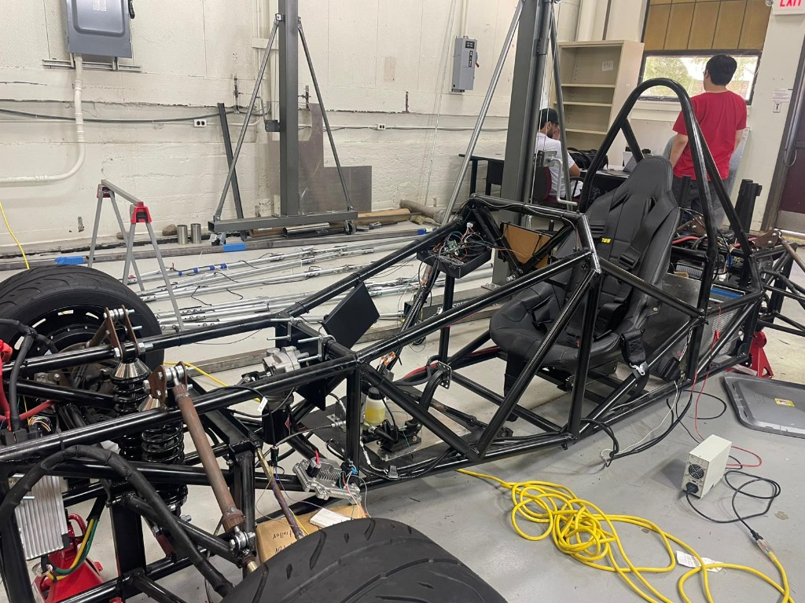
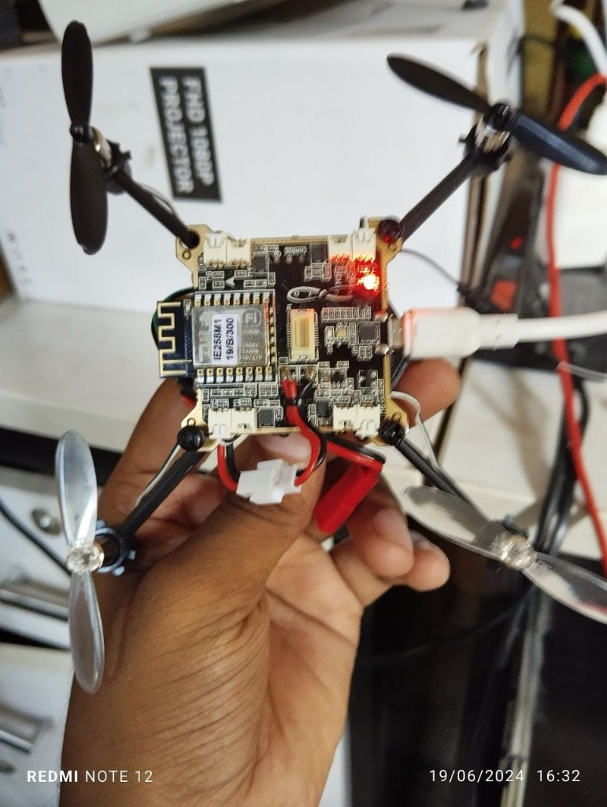
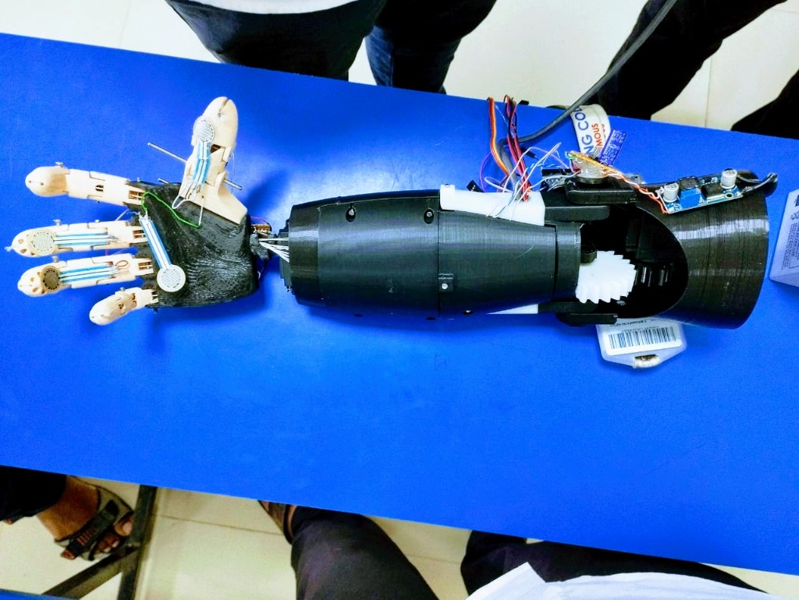

Building intelligent machines that bridge cutting-edge AI with real-world impact —
from autonomous UAVs to bionic prosthetics that restore human capability.
I'm a Robotics & Control Systems Engineer driven by a singular mission: designing
intelligent systems that make a tangible difference in people's lives. With deep expertise
spanning embedded systems, autonomous navigation, and machine learning integration, I
translate complex engineering theory into deployable, real-world solutions.
At Texas A&M University, I channeled this passion into autonomous EV research —
developing ROS2-driven simulation environments that improved validation efficiency by 45%.
Beyond academia, my projects range from AI-powered drones capable of real-time obstacle
avoidance to myoelectric prosthetic hands that restore natural motion for amputees.
I thrive at the intersection of hardware and software — equally comfortable architecting
control algorithms in MATLAB/Simulink as I am integrating LiDAR sensor fusion pipelines
on embedded Linux systems. Precision, empathy, and curiosity define how I approach
every engineering challenge.
Embedded Systems
Low-level programming and tight hardware–software integration across microcontrollers, FPGAs, and
real-time platforms.
Control Systems
Advanced control theory — PID, MPC, Kalman filtering, and state-space design optimized for real-world
dynamics.
Human-Centered Design
Engineering with empathy — building technology that directly improves human quality of life and
accessibility.
Precision Engineering
Meticulous attention to detail in system design, from sub-2mm kinematic accuracy to tight real-time
control loops.
What I've Built
Featured Projects
A curated showcase of robotics, control systems, and AI engineering projects
demonstrating real-world impact.
01
ROS2SLAMLiDAR
Autonomous EV Research — Texas A&M
Research Assistant · Texas A&M University
Designed and deployed a ROS2-based autonomous EV simulation environment on Linux,
integrating LiDAR, depth cameras, and IMU for full SLAM-enabled navigation. Improved
testing and validation pipeline efficiency by 45% through optimized
sensor fusion workflows and automated test orchestration.

Autonomous EV chassis build — Texas A&M Lab
45% improvement in simulation validation efficiency
Multi-sensor fusion: LiDAR + depth camera + IMU
ROS2 & Linux-based simulation stack
02
FeaturedAutonomous
AI-Enabled Autonomous Drone
Personal Project · UAV Systems
Engineered a fully autonomous UAV system incorporating real-time obstacle avoidance,
GPS-based waypoint navigation, and ML-driven target recognition. Leveraged OpenCV
for computer vision pipelines and TensorFlow for on-board inference, enabling
robust autonomous operation in dynamic, unstructured environments.

Custom flight controller PCB — AI Autonomous Drone build
Real-time obstacle avoidance at flight speed
GPS waypoint navigation with dynamic re-routing
On-board ML inference via TensorFlow + OpenCV
03
BiomedEMG
Prosthetic Bionic Hand
Engineering Project · Human Augmentation
Developed a myoelectric prosthetic hand achieving 5 degrees of freedom through
EMG signal acquisition, filtering, and ML-based gesture classification. The system
translates surface muscle signals into precise actuator commands, enabling natural
hand mobility for upper-limb amputees.

Myoelectric prosthetic bionic hand prototype
5-DoF actuation with natural gesture mapping
EMG signal processing & ML gesture recognition
Compact embedded control system
04
MPCSimulation
Obstacle Avoidance & Automated Parking
Control Systems Project · Vehicle Dynamics
Implemented a Model Predictive Control (MPC) framework in Python simulating realistic
vehicle dynamics for urban obstacle avoidance and automated parking maneuvers. Tuned
the cost function across multiple scenarios to achieve reliable, constraint-aware
trajectory planning.
MPC-based trajectory optimization in Python
Realistic vehicle dynamics model
Validated across multiple obstacle scenarios
05
KinematicsMATLAB
6-Axis Fanuc Manipulator Control Model
Robotics Project · Industrial Automation
Developed a full inverse kinematics and control model for a 6-axis Fanuc industrial
manipulator in MATLAB/Simulink, then deployed the controller on a Raspberry Pi.
Achieved end-effector positioning accuracy of <2mm error across
the full workspace envelope.
<2mm end-effector positioning accuracy
Raspberry Pi deployment from MATLAB model
Full 6-DoF inverse kinematics solution
06
Path PlanningAnalysis
Path Planning Algorithm Comparison
Research Project · Autonomous Navigation
Conducted a rigorous comparative analysis of A* and Dijkstra path-planning algorithms
applied to real quarry terrain maps derived from aerial imagery. Evaluated performance
metrics including compute time, path optimality, and scalability across varying
environmental complexity.
A* vs. Dijkstra benchmarking on real map data
Aerial imagery terrain preprocessing pipeline
Metric analysis: speed, path quality, scalability
Technical Expertise
Skills & Technologies
A comprehensive toolkit built across robotics, control systems, AI, and embedded
hardware engineering.
Programming
C / C++PythonMATLABAssemblyEmbedded CReal-Time Systems
Whether you have an opportunity, a collaboration idea, or just want to talk robotics
— I'd love to hear from you.
Connect With Me
I'm actively seeking opportunities in robotics, control systems, and autonomous
systems engineering. Feel free to reach out via email or connect on LinkedIn.